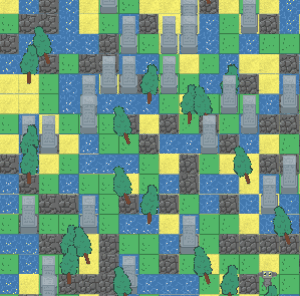
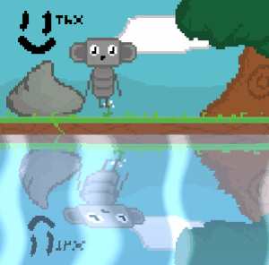
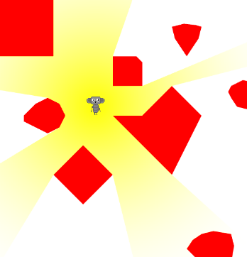
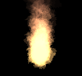

A highly efficient (stress-test) and lightweight WebGL-based 2D rendering engine focused on rendering capabilities.
32x32 Texture Sprites 60FPS
Intel® Iris® Xe Graphics : 42K spritesnpm i rapid-render
Or via CDN:
<script src="https://unpkg.com/rapid-render/dist/rapid.umd.cjs"></script>
import { Rapid, Color, Vec2 } from "rapid-render"
// Initialize
const rapid = new Rapid({
canvas: document.getElementById("gameCanvas"),
backgroundColor: Color.fromHex("E6F0FF")
})
// Render example
rapid.render(() => {
rapid.renderRect({
offset: new Vec2(100, 100),
width: 50,
height: 50,
color: Color.Red
})
})
For more examples and detailed documentation, visit our website.
Issues and PRs are welcome!
   